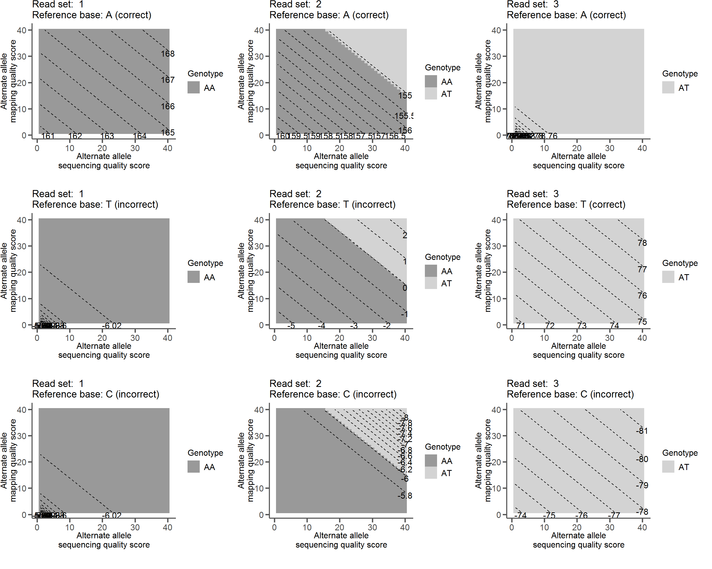

There are 10 possible genotypes at a biallelic site:
\[ \mathbb{G} = \{\{A,A\}, \{A,T\}, \{A,C\}, \{A,G\}, \{T,T\}, \{T,C\}, \{T,G\}, \{C,C\}, \{C,G\}, \{G,G\}\} \]
Given a set of reads \(R\) at a site, we can calculate the likelihood of each genotype.
Equation 1
\[ P(R|\mathbb{G} = \{A_1,A_2\}) = \prod_{r}^{R} (\frac{1}{2}P(b_r|A_1) + \frac{1}{2}P(b_r|A_2) ) \]
To calculate the probability of the mapped base at the current read \(b_r\) given each allele in the genotype \(A_i\), we can use the Phred scaled base quality score \(Q_b\) and Phred scaled mapping quality score \(Q_m\) for that base. First we convert the Phred scale scores into probabilities of error:
Equation 2
\[ e = 10^{-\frac{Q}{10}} \]
Plugging in \(Q_b\) and \(Q_m\) gets us \(e_b\) and \(e_m\), respectively. These are the probabilities of error for both base calling and mapping.
Then we can calculate the probability of the base given an allele \(P(b_r|A_i)\) as follows:
Equation 3
\[\begin{equation} P(b_r|A_i) = \begin{cases} \frac{(e_s * e_m)}{3} & \text{: $b \neq A_i$}\\ 1 - (e_s * e_m) & \text{: $b = A_i$}\\ \end{cases} \end{equation}\]The likelihood of each genotype is obtained in this fashion. The likelihood for each of the 10 genotypes (\(P(R|\mathbb{G} = \{A_1,A_2\})\)) is all we need for the purpose of calculating a reference quality score. (Note: ANGSD does not consider mapping quality when calculating genotype likelihoods).
Now we wish to compute a quality value \(Q_{ref}\) for a reference base given a set of reads \(R\) that map to that position . The general behavior we want for this score is that it will be high when we are sure the reference base \(B_R\) is correct and low when we are sure the reference base is incorrect.
First, we sum up the likelihoods of all genotypes that contain the reference allele (\(L_{match}\)) and separately sum up the likelihoods of all the genotypes that do not contain the reference allele (\(L_{mismatch}\)).
\[ L_{match} = \sum_g^\mathbb{G} P(R\;|\;g) \; \text{if} \; B_R \in g \]
\[ L_{mismatch} = \sum_g^\mathbb{G} P(R\;|\;g) \; \text{if} \; B_R \notin g \]
For instance, if our reference base was an A, then:
\[ L_{match} = P(R|\{A,A\}) + P(R|\{A,T\}) + P(R|\{A,C\}) + P(R|\{A,G\})\]
and:
\[ L_{mismatch} = P(R|\{T,T\}) + P(R|\{T,C\}) + P(R|\{T,G\}) + P(R|\{C,C\}) + P(R|\{C,G\}) + P(R|\{G,G\})\]
with the probabilities being calculated with #quation 1.
We can then set up a likelihood ratio \(LR\) by divding \(L_{mismatch}\) by \(L_{match}\):
Equation 6
\[ LR = \frac{L_{match}}{L_{mismatch}} \]
And this can be log-scaled to get us an informative value for a quality score:
Equation 7
\[ Q_\mathbb{R} = \log{LR} \]
Example read sets:
| Reads | A A A A A A A A A A A A A A A A A A A A |
| Base qual | 40 40 40 40 40 40 40 40 40 40 40 40 40 40 40 40 40 40 40 1-40 |
| Map qual | 40 40 40 40 40 40 40 40 40 40 40 40 40 40 40 40 40 40 40 1-40 |
| Reads | A A A A A A A A A A A A A A A A A A A T |
| Base qual | 40 40 40 40 40 40 40 40 40 40 40 40 40 40 40 40 40 40 40 1-40 |
| Map qual | 40 40 40 40 40 40 40 40 40 40 40 40 40 40 40 40 40 40 40 1-40 |
| Reads | A A A A A A A A A A T T T T T T T T T T |
| Base qual | 40 40 40 40 40 40 40 40 40 40 40 40 40 40 40 40 40 40 40 1-40 |
| Map qual | 40 40 40 40 40 40 40 40 40 40 40 40 40 40 40 40 40 40 40 1-40 |
The above read sets were plugged into the relevant equations to calculate \(Q_\mathbb{R}\) with one read varying in both base and mapping quality. The countour plots show how each behave with different reference base calls. For example, with read set 1 (all As) and a reference base call of A we see high scores regardless of varying quality of a single read (upper left panel). However, the same read set when the reference base is called as a C scores very low, indicating that the reads do not support a C as the called base (lower left panel).
Examples of \(Q_{ref}\)

This has the desired behavior of being a high score when we are sure the reference base is correct and a low score when we are sure the reference base is not correct. In fact, it has the nice property of being centered around 0, with positive scores indicating support for the called reference base and negative scores indicating support for the reference base being an error. The closer to 0 the score is (positive or negative) the less confident we are in our assertion.